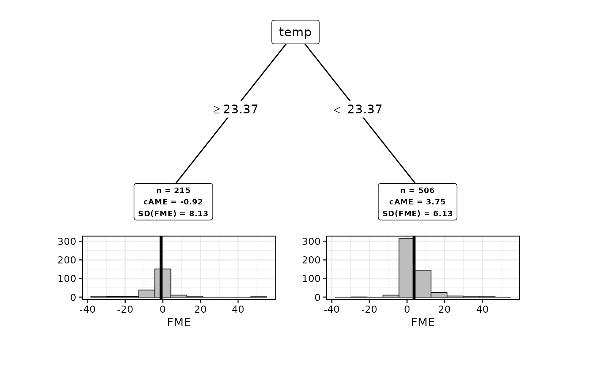

This is a wrapper function that creates the correct subclass of Partitioning.
It computes feature subspaces for semi-global interpretations of FMEs via recursive partitioning (RP).
Usage
came(
effects,
number.partitions = NULL,
max.sd = Inf,
rp.method = "ctree",
tree.control = NULL
)Arguments
- effects
A
ForwardMarginalEffectobject with FMEs computed.- number.partitions
The exact number of partitions required. Either
number.partitionsormax.sdcan be specified.- max.sd
The maximum standard deviation required in each partition. Among multiple partitionings with this criterion identified, the one with lowest number of partitions is selected. Either
number.partitionsormax.sdcan be specified.- rp.method
One of
"ctree"or"rpart". The RP algorithm used for growing the decision tree. Defaults to"ctree".- tree.control
Control parameters for the RP algorithm. One of
"ctree.control(...)"or"rpart.control(...)".
References
Scholbeck, C.A., Casalicchio, G., Molnar, C. et al. Marginal effects for non-linear prediction functions. Data Min Knowl Disc (2024). https://doi.org/10.1007/s10618-023-00993-x
Examples
# Train a model and compute FMEs:
library(mlr3verse)
library(ranger)
data(bikes, package = "fmeffects")
task = as_task_regr(x = bikes, id = "bikes", target = "count")
forest = lrn("regr.ranger")$train(task)
effects = fme(model = forest, data = bikes, features = list("temp" = 1), ep.method = "envelope")
# Find a partitioning with exactly 3 subspaces:
subspaces = came(effects, number.partitions = 3)
# Find a partitioning with a maximum standard deviation of 20, use `rpart`:
library(rpart)
subspaces = came(effects, max.sd = 200, rp.method = "rpart")
# Analyze results:
summary(subspaces)
#>
#> PartitioningRpart of an FME object
#>
#> Method: max.sd = 200
#>
#> n cAME SD(fME)
#> 728 57.43157 169.7209 *
#> 335 -40.74160 108.5350
#> 393 141.11607 167.7125
#> ---
#> * root node (non-partitioned)
#>
#> AME (Global): 57.4316
#>
plot(subspaces)

# Extract results:
subspaces$results
#> [[1]]
#> [[1]]$n
#> [1] 728
#>
#> [[1]]$cAME
#> [1] 57.43157
#>
#> [[1]]$`SD(fME)`
#> [1] 169.7209
#>
#> [[1]]$is.terminal.node
#> [1] FALSE
#>
#>
#> [[2]]
#> [[2]]$n
#> [1] 335
#>
#> [[2]]$cAME
#> [1] -40.7416
#>
#> [[2]]$`SD(fME)`
#> [1] 108.535
#>
#> [[2]]$is.terminal.node
#> [1] TRUE
#>
#>
#> [[3]]
#> [[3]]$n
#> [1] 393
#>
#> [[3]]$cAME
#> [1] 141.1161
#>
#> [[3]]$`SD(fME)`
#> [1] 167.7125
#>
#> [[3]]$is.terminal.node
#> [1] TRUE
#>
#>
subspaces$tree
#>
#> Model formula:
#> fme ~ season + year + holiday + weekday + workingday + weather +
#> temp + humidity + windspeed
#>
#> Fitted party:
#> [1] root
#> | [2] temp >= 16.85125: -40.742 (n = 335, err = 3934467.5)
#> | [3] temp < 16.85125: 141.116 (n = 393, err = 11025968.6)
#>
#> Number of inner nodes: 1
#> Number of terminal nodes: 2